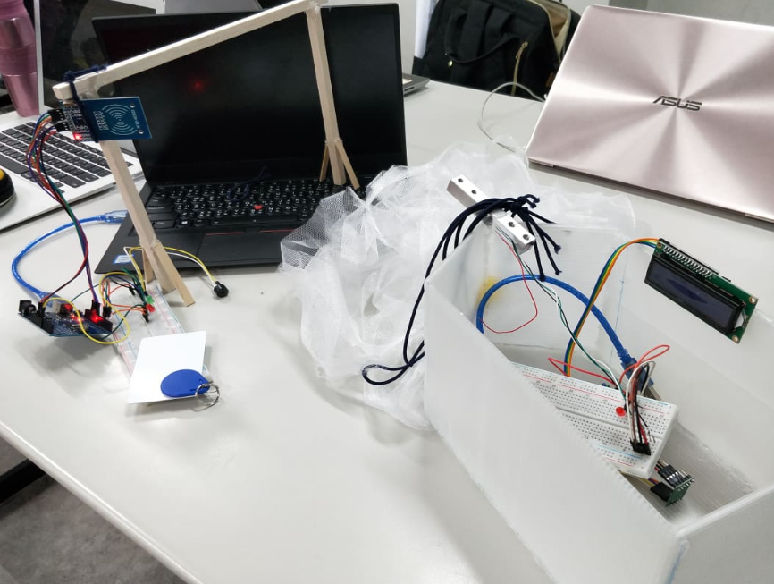
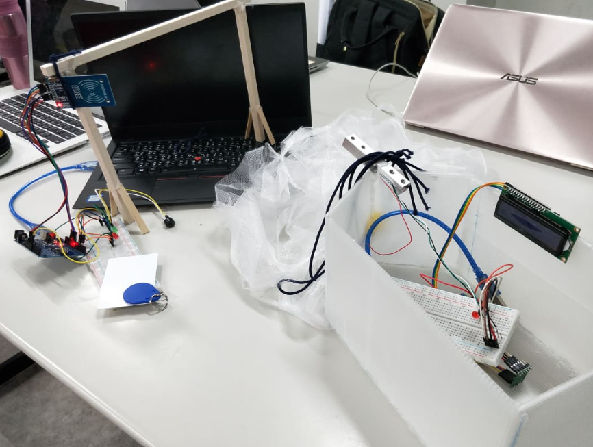
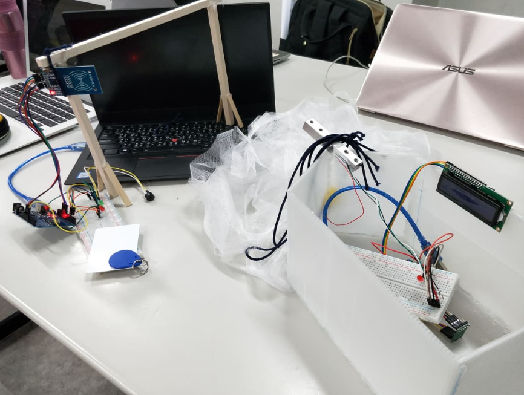

1. To learn and go through each stages of the design cycle to solve a problem.
2. Apply learning and skills
After learning about the fundamentals of electronics and programming microcontrollers, students get a chance to apply their knowledge through a Design Thinking project. The prompt is to solve a sustainability related issue in Taiwan using their Arduino microcontrollers. Some students decided to create a weight measurement device for fishing boats to prevent overfishing, others created a portable clean water test.
The project itself challenges students to work through the Design Thinking cycle to create a working prototype(s) that solves their initial design problem.
